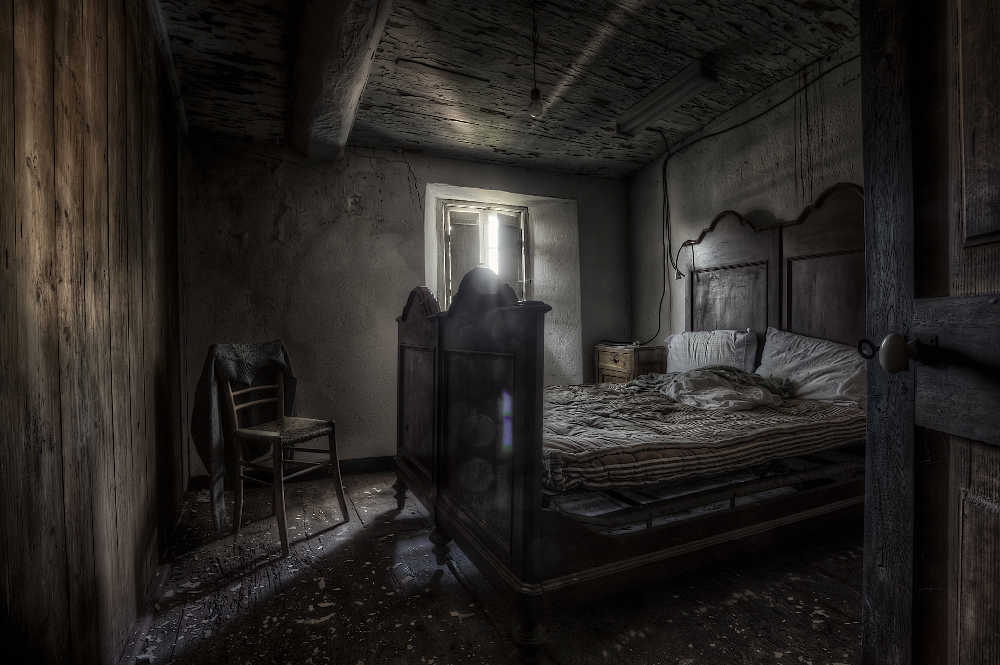

Nichée entre deux réalités parallèles, la chambre Dos au Mur incarne la philosophie du minimalisme visuel. Ici, pas de distraction inutile, pas d’horizon superflu : tout est concentré sur l’essentiel — vous, le mur, et le silence compact qui les unit. Une expérience contemplative d’une intensité rare, pour les amateurs de retraites urbaines et d’introspection forcée.
Le grand lit en bois, digne d’un autre siècle, occupe presque tout l’espace disponible, vous enveloppant dans une étreinte… spatiale. Ses ressorts fatigués racontent des histoires, son bois craque de souvenirs, et sa taille imposante rend toute circulation facultative. L’endroit parfait pour ne rien faire, littéralement, puisque bouger devient un défi d’architecture.
Depuis la fenêtre, découvrez un spectacle à couper le souffle : un mur de briques, authentique et sans filtre, à seulement cinquante centimètres de votre regard. Les nuances subtiles d’ocre et de poussière évoluent au fil de la journée, offrant un véritable festival chromatique entre gris humide et rouge terni. Ici, la nature reprend ses droits — enfin, surtout le béton.